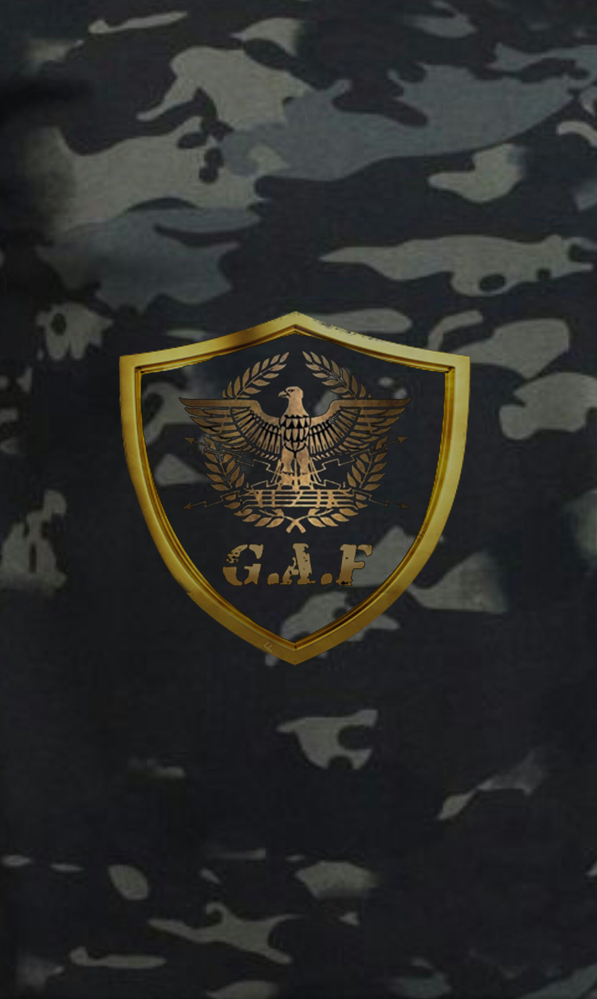

1.- ARMA 3 ORIGINAL.
2.- MILSIM.
3.- MODS OFICIALES GAF.
4.- TEAMSPEAK 3.
5.- DISCORD.
6.- RADMIN Y HAMACHI.
7.- EDAD REQUERIDA: SE RESERVA EL DERECHO DE ADMISION.
8.- PAISES: HABLA HISPANA.
9.- RESPETO HACIA TODOS LOS MIEMBROS DEL CLAN.
10.- NO SE PERMITE DISCRIMINACIONES RACIALES, CULTURALES, RELIGIOSAS,
POLITICAS, SEXUALES, SIMBOLOS ETC.
11.- TENER MICROFONO Y AUDIFONOS OPERATIVOS.
12.- ESTAR ACTIVO EN LAS OPERACIONES OFICALES: MIERCOLES 19:00HRS Vzla. Y DOMINGOS 18:00HRS Vzla.
13.- CUMPLIR INSTRUCCIONES DE LOS SUPERIORES.
14.- SER DISCIPLINADO.
15.- INSCRIBIRSE DE MANERA OBLIGATORIA A TODO EL PERSONAL QUE SIMULE CON EL CLAN.
16.- SE PUEDE PERTENECER A OTRO CLAN, PERO ES OBLIGATORIO EN EL MOMENTO DE
SIMULAR CON EL CLAN DEBE DE TERNER EL [G.A.F] ADELANTE DE SU NOMBRE Y YA
PERTENECER A LA UNIDAD.
17.- PARA PARTICIPAR EN MISIONES OFICIALES DEBERAN HABER REALIZADO Y TERMINADO
SATISFACTORIAMENTE EL BOOTCAMP SIN EXCEPCION ALGUNA.
18.- INASISTENIAS INJUSTIFICADAS POR UN PERIODO DE 6 MISIONES OFICIALES
ACARREAR SANCIONES.
19.- LAS FALTAS AL REGLAMENTO ACARREARÁN SUSPENSIÓN O EXPULSIÓN DEL CLAN.
QUEDARA A DISCRECION DEL CONSEJO DISIPLINARIO.